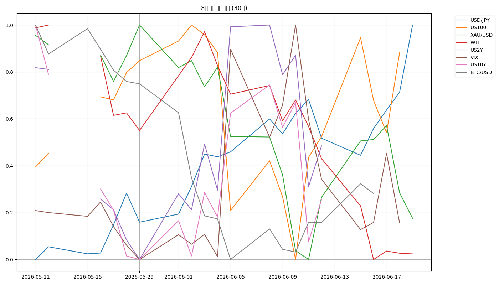

📈 CFD戦略ブリーフ — 6/22週
対象週: 2026-6-19_wk03（データ期間 2026-06-15→06-19 / snapshot 2026-06-20） ｜ ソース: wk03 review・meta・snapshot・boss市況・--news ｜ ※wk02はスルー（wk01比較）
Regime: Neutral（リスクオン回帰）
Add risk gate: 再開（VIX 16.4<18）
Reduce: caution（介入/青丸/VIX>18で発火）
機械=リスクオン回帰 / boss 1次=「介入警戒が日本株・クロス円の上値を抑える綱引き」→ 両論併記
1. 8ペア 30日スナップショット
| 銘柄 | 最新 | 30日% | wk01→wk03 |
|---|
| US100 | 30,406.2 | +3.57% | +5.0%(リスクオン回帰) |
| USD/JPY | 161.289 | +1.51% | +0.996(ピーク161.80) |
| BTC/USD | 62,896.5 | -18.88% | +1,974(下落相場) |
| WTI | 76.540 | -20.56% | -14.0(停戦・slump) |
| XAU/USD | 4,172.9 | -8.08% | -192(gold=off) |
| US10Y | 4.487 | -2.16% | -0.049(4.6%が重い) |
| US2Y | 4.213 | -1.03% | -0.067(織込一服) |
| VIX | 16.400 | -2.15% | -5.11(gate再開) |
JP225: 6/18東証終値71,053.49円で初の7万円超え（--news #5＝正規ソース／snapshot8ペアには含まれない）。上値青丸72,800が危険ゾーン（2倍ルール）
8ペア30日 正規化プロット

2. レジーム & ゲート状況
機械レジーム
Neutral
equities=up / vol=normal / oil=slump / gold=off / crypto=weak / yields=falling
Add risk ゲート
再開
VIX 16.4 < 18（wk01 21.51から急低下）。6/16-17ダブル中銀通過＋停戦/ホルムズ再開でリスクオン回帰。ただし上値追い慎重・分割限定
Reduce risk ゲート
caution
ドル円161.80超で実弾介入/レートチェック / JP225 72,800-73,000青丸拒否 / US100<29,900 / US10Y>4.6% / VIX>18再上昇 で発火
3. シナリオ（3分岐）
A. リスクオン回帰（boss主筋）上値追わず綱引き・短期は青丸/30,900逆張り
B. ドル円介入フラッシュ161.80→実弾介入/レートチェック→2024年8月型円高
C. 地政学再燃6/19米イラン協議延期→ホルムズ再封鎖懸念で原油・金反発
綱引きの構図：ホルムズ再開の株高・ドル高 vs ドル円161.80介入警戒（2024年安値圏）の日本株・クロス円上値重し。月曜は米休場明けの薄商いで振り回し注意。エッジのない上値追いをしない。
4. CFD 銘柄別アクションプラン
USD/JPY キングピン・介入警戒
早朝161.68-161.83（約161.80）ピークは2024年4月29日の介入直前とほぼ同水準。上値での売りの流れを意識、162一段上げからの急落（ズドン）リスク。買い上がりはバイングクライマックス警戒。
上=162（一段上げ→急落） ／ 下=159.5割れで巻き戻し→156→155 ／ トリガー: 実弾介入・レートチェック・米休場明け薄商い。
US100 レンジ・30,900逆張り短期
リスクオン回帰で30,406（wk01比+5.0%）。カップ・ウィズ・ハンドルで本来上方向も上は火傷ゾーン＝レンジ。本来の上昇の1/3〜半分しか取れていない見方も。高値追い厳禁。
上=30,900周辺で一旦の下落を利用する逆張り ／ 下=29,900割れで調整・28,957 ／ 個別: MLCC→PCB資金シフト・スペースX天井-23%調整の自律反発。
JP225 7万円超・上値青丸危険
6/18終値71,053.49円で初の7万円超え（4/27の6万から2か月足らず）。金曜は本来の下落をこなさず上昇＝強いが上値は危険ゾーン。
上値青丸=72,800（バブル期暴落幅の2倍ルール・夏天井）→ここからの大きな急落シナリオ警戒 ／ 73,000トライとその直上からの下落の両方を使う ／ 介入警戒が重し・小幅レートチェック観測。
Gold (XAU) ネック反発買い・半値持ち越し
$4,173でgold=off継続も、boss戦略は4120-4060週足ネック到達からの反発上昇。フィボ0.618で勢い「結構強い」、リスクオン地合いが追い風。CFDは
半値持ち越し（ロング・越週オープン）。
買い=4,120周辺からの反発で4,230目標 ／ 下=4,020→4,120の反発も利用可 ／ ※エントリー詳細は1次資料に明示なし（次回確定記録）。
BTC/USD 下落相場・戻り売り
$62,896で小反発も30日-18.88%。boss：明確に「下落相場」、「上がっても下がる」を繰り返す。独立妙味なし・監視中心。
下=66,200割れ→60,700ターゲット ／ 戻り=64,200に戻したらそこからの反転下落を取る戻り売り目線。
WTI 停戦slump・条件付き反発
停戦/ホルムズ再開で-20.56%急落（地政学プレミアム剥落・oil=slump）。地政学はニュースより自律反発のテクニカル要因として捉えるスタンス。
自律反発ライン=78.83（約78.73）だが76.2超えからでないと使えない条件付き ／ トリガー: 6/19米イラン協議延期＝再燃の火種残る・ホルムズ再封鎖懸念。
5. 週内タイムライン
- 6/22(月) 米休場明け・薄商い。ランダムな振り回し注意。ドル円161.80介入警戒を最優先で監視。
- 週前半 リスクオン回帰継続。日経73,000トライ vs 青丸72,800・US100 30,900逆張り短期。上値追い厳禁。
- 週中盤 金4120-4060ネック反発。4,230目標。CFDゴールド半値持ち越しの管理。
- 週内随時 ドル円161.80介入監視。実弾介入/レートチェックで急激な円高フラッシュ（2024年8月は3週で円+10%）。US10Y 4.6%・JP10Y 2.65%上抜けが円高反転のヒント。
6. 監視トリガー（毎朝チェック）
ドル円161.80超で実弾介入/レートチェック→ 急激な円高フラッシュ(2024年8月は3週で円+10%)
JP225 72,800-73,000青丸拒否→ 大きな急落シナリオ(2倍ルール)
US100 30,900拒否 / 29,900割れ→ 火傷ゾーンからの逆張り下落・調整
US10Y 4.6%上抜け / JP10Y 2.65%上抜け→ ドル円上値追随の鍵・円高反転タイミング
VIX 18超 再上昇→ Add risk gate再閉鎖・Reduce発火
Gold 4120-4060週足ネック→ 反発買い(→4,230)・4,020→4,120も利用可
7. GMポートフォリオ（参考・2026-06-20）
※今週は数値サマリーの1次提供なし（スクリーンショットのみ）。残高・評価損益の詳細は上記画像参照。スタンス: リスクオン回帰で長期コアは保有継続・積立も、日経7万円超の過熱・ドル円介入リスクで一部利確・現金比率の点検は継続。識者「株高の恩恵は一部」も留意。
⚠️ 本資料は 2026-6-19_wk03 の確定データ（snapshot/review/meta/boss市況/--news）に基づく整理であり、創作・ソース外情報は含まない。
機械レジーム=Neutral（リスクオン回帰）と boss「介入警戒が日本株・クロス円の上値を抑える綱引き」は「実測ラベル vs 前方視点」として併記。JP225は6/18終値71,053.49円（--news #5・snapshot8ペア外）。BOJ 6/15-16結果は1次資料に明示なし。ゴールド半値持ち越しのエントリー詳細は1次資料になし（次回確定記録）。X live検索はツール非露出で実データなし＝Evidence非採用。ポートフォリオ数値は今週1次提供なし＝画像参照のみ。
投資助言ではなく GM運用の作戦整理。最終判断はミナト。 生成: ClaudeCode / 2026-06-20。